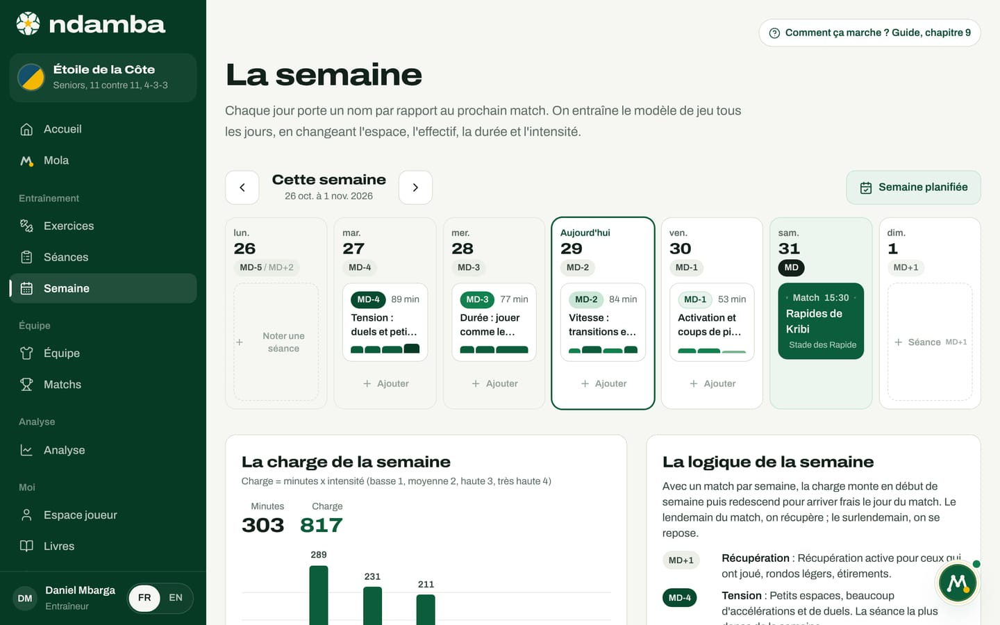

La philosophie Njangi
La méthode expliquée à quelqu’un qui n’est pas entraîneur : la possession avec intention, l’image du njangi, les sept mots du jeu, l’Indice Njangi avec sa formule exacte et ses bandes de lecture, et le calendrier MD de la semaine.
10 min de lecture
Ndamba n’est pas une boîte à outils neutre. Chaque écran sert une seule idée du football, la méthode Njangi, que l’on résume en trois mots : posséder avec intention. Avant d’apprendre à se servir des boutons, il faut donc comprendre cette idée. Ce chapitre l’explique sans jargon, pour un parent, un dirigeant ou un investisseur qui n’a jamais entraîné. Il présente l’image qui lui donne son nom, les sept mots que l’application utilise partout, la mesure qui vérifie l’idée match après match, et le calendrier qui organise la semaine.
Le njangi : une caisse qui circule
Au Cameroun, le njangi (on dit aussi la tontine) réunit des voisins, des collègues ou des amis. Chaque mois, chacun verse sa part dans la même caisse, et la caisse entière va à un membre, à tour de rôle. Personne ne garde l’argent pour lui. Le mois suivant, celui qui a touché verse comme les autres, et la caisse va à quelqu’un d’autre. Le Code Njangi rappelle que la même sagesse existe partout en Afrique sous d’autres noms : la susu au Ghana, l’esusu au Nigeria, le stokvel en Afrique du Sud, la chama au Kenya.
Le njangi tient parce que chacun verse, parce que la caisse circule, parce que chacun sait que son tour viendra, et parce que la caisse sert un projet : une scolarité, un commerce, un toit. On ne fait pas tourner l’argent pour le plaisir de le voir passer de main en main.
Sur le terrain, la transposition est presque mot pour mot :
| Dans le njangi | Sur le terrain |
|---|---|
| La caisse | Le ballon |
| La cotisation | La passe, l’appel, l’effort sans ballon |
| Toucher la caisse | Marquer, ou se créer une vraie occasion |
| Le tour de chacun | Chaque joueur participe à la circulation |
| Le projet que sert la caisse | L’intention de chaque passe |
| Le règlement du njangi | Le modèle de jeu, que la direction technique protège |
Le roman raconte cette découverte aux enfants. Au chapitre 2 du tome 1, Le njangi de Mami, BriBri et Kaydoudou passent les vacances à Bafoussam chez leur grand-mère, Mami Nyanga, qui dirige le njangi des femmes du quartier. Ils regardent chacune déposer sa part dans une caisse peinte en vert, puis Mami tendre la caisse entière à une seule personne. BriBri fait le lien : « Le njangi, c’est comme le ballon. Chacun verse sa passe. » Cette scène devient la Leçon du Ballon n° 2, que les jeunes joueurs retrouvent dans l’application.
Le livre de la méthode ajoute un point que les entraîneurs oublient souvent : la cotisation n’est pas seulement la passe. L’ailier qui reste large pour écarter un défenseur, sans toucher le ballon pendant cinq minutes, verse sa part. L’attaquant qui court dans la profondeur pour emmener un défenseur central, et ne reçoit rien, verse sa part. Une équipe njangi apprend à voir ces cotisations invisibles et à les applaudir.
Posséder avec intention
Il existe une manière de mal comprendre cette image : croire que faire circuler le ballon suffit. On voit alors des équipes enchaîner les passes entre défenseurs, d’un côté à l’autre, devant un adversaire qui ne bouge pas. Le pourcentage de possession est flatteur, le match est stérile. Un njangi où l’argent tourne sans jamais servir à rien finit par mourir ; une possession sans intention aussi. D’où la devise : « Le ballon doit voyager. Mais il doit savoir où il va. »
La méthode change donc la question que l’on pose au joueur. On ne lui demande pas « as-tu gardé le ballon ? », mais : « Que prépare ta passe ? » Une passe en arrière peut être excellente si elle sert à attirer l’adversaire ou à souffler ; la même passe est mauvaise si elle ne prépare rien.
Les sept mots du jeu
Pour répondre à « que prépare ta passe ? », la méthode donne sept mots. Les cinq premiers sont les intentions de la possession, ce que l’équipe veut faire quand elle a le ballon. Les deux derniers sont des réflexes sans ballon, ce qu’elle fait à l’instant où elle le perd ou le récupère. L’application les range tous les sept sous le nom d’intentions : vous les verrez sur chaque fiche d’exercice, sur chaque séance et dans chaque rapport.
| Mot | Ce qu’il veut dire | Ce que l’on voit sur le terrain |
|---|---|---|
| Sortir | Construire depuis l’arrière en attirant pour libérer | Le gardien et les défenseurs attirent la pression, puis trouvent le joueur libre |
| Progresser | Traverser les lignes adverses | Une passe ou une conduite qui dépasse une ligne de défenseurs |
| Fixer | Attirer et fixer pour créer une supériorité ailleurs | Un joueur attire deux adversaires, puis donne à celui qu’il a libéré |
| Finir | Entrer dans la zone de finition et tirer juste | Des entrées dans la surface et des tirs dans de bonnes conditions |
| Respirer | Garder le ballon pour se réorganiser et récupérer | Une circulation calme pour souffler, gérer un score ou la chaleur |
| Reprendre | Cinq secondes de contre-pression après la perte | Toute l’équipe presse le ballon là où elle vient de le perdre |
| Regarder devant | Après la récupération, le premier regard va devant | Le joueur qui récupère cherche d’abord la passe vers l’avant |

Pour les enfants, ces sept mots sont encore trop nombreux. Le roman leur donne cinq images plus simples, les cinq pièces du Njangi, une par pays traversé par les deux frères : le cœur (jouer ensemble, au Cameroun), la raison (chaque passe a un but, aux États-Unis), les yeux (voir avant de recevoir, en France), la carte (être au bon endroit, en Catalogne) et le souffle (posséder aussi quand ça brûle, en Angleterre). Les fiches d’exercices indiquent aussi leurs Pièces du Njangi. Vers 15 ans, les cinq pièces se fondent dans les sept mots des adultes.
Mesurer : l’Indice Njangi
Une idée qui ne se mesure pas reste un slogan. Le pourcentage de possession ne suffit pas : il dit combien de temps l’équipe a tenu la caisse, pas ce qu’elle en a fait. L’Indice Njangi répond à une autre question : sur 100, l’équipe a-t-elle possédé avec intention ?
Il se construit à partir de quatorze codes, les boutons du pupitre de codage. Pendant le match, l’analyste (ou l’entraîneur, à défaut) touche un bouton par action. Les boutons sont rangés en groupes : Possession (passe réussie, passe perdue, passe ou conduite progressive, ligne traversée), Danger (entrée dans le dernier tiers, entrée dans la surface, tir, tir cadré, but), Fixation (dribble qui fixe deux adversaires, renversement) et Transitions (perte, reprise en 5 secondes, récupération). Un dernier groupe, Adversaire, note les tirs et les buts de l’équipe d’en face.

À partir de ces codes, l’Indice additionne cinq sous-indices, chacun noté sur 20 points. Chacun répond à une question.
- Progression : allons-nous vers l’avant ? On compte les passes progressives et les lignes traversées, rapportées aux passes tentées.
- Pénétration : arrivons-nous là où l’on marque ? On compte les entrées dans le dernier tiers et dans la surface (l’entrée dans la surface compte double), rapportées au nombre de possessions.
- Fixation : attirons-nous l’adversaire pour libérer un partenaire ? On compte les actions qui fixent deux adversaires et les renversements, rapportés aux possessions.
- Reprise : reprenons-nous le ballon tout de suite après l’avoir perdu ? On compte les ballons repris en 5 secondes, rapportés à toutes les pertes.
- Contrôle : gardons-nous le ballon sans offrir de pertes dangereuses ? On mesure la part de nos actions de possession qui gardent le ballon.
Chaque sous-indice suit la même logique. On calcule un rapport simple, on le compare à une valeur de référence, et l’équipe qui atteint la référence obtient 20 points. La moitié de la référence donne 10 points. Au-delà de la référence, on reste à 20 : ce plafond empêche une équipe d’acheter tout l’Indice avec une seule qualité. Pour le Contrôle, une équipe qui garde le ballon sur 55 % de ses actions marque 0 point, à 70 % elle marque 10 points, à 85 % et plus elle marque 20 points.
Voici la formule exacte, celle du chapitre 32 du Code Njangi et du fichier de calcul de l’application, à l’identique :
PASSES = PASS_OK + PASS_LOST
PERTES = PASS_LOST + LOSS
POSS = PASS_LOST + LOSS + SHOT
ACTIONS = PASS_OK + PASS_LOST + LOSS
Progression = min(20, 20 * (PROG + LINE) / (0.35 * PASSES))
Penetration = min(20, 20 * (FINAL3 + 2 * BOX) / (1.00 * POSS))
Fixation = min(20, 20 * (FIX2 + SWITCH) / (0.25 * POSS))
Reprise = min(20, 20 * REGAIN5 / (0.40 * PERTES))
Controle = max(0, min(20, 20 * (PASS_OK / ACTIONS - 0.55) / 0.30))
Indice = somme des cinq, chacun arrondi au dixième
Quatre règles complètent la formule. Si un dénominateur vaut zéro (aucune passe, aucune perte), le sous-indice vaut 0. Un match, ou une saison entière, se calcule en additionnant les codes puis en appliquant la formule, jamais en faisant la moyenne de mi-temps ou de matchs. Les valeurs de référence (0,35 ; 1 ; 0,25 ; 0,40 ; 55 à 85 %) sont des repères internes à la méthode, pas des moyennes du football mondial : on les calibre sur ses propres matchs et on ne les change jamais en cours de saison. Enfin, chez les jeunes, l’Indice mesure l’équipe, jamais un enfant.
Le livre donne un exemple complet. Une équipe senior a relevé, sur un match, 300 passes réussies, 80 passes perdues, 50 actions progressives, 30 lignes traversées, 42 entrées dans le dernier tiers, 15 entrées dans la surface, 12 fixations, 9 renversements, 30 pertes en duel ou en conduite, 33 reprises en 5 secondes et 10 tirs. Cela donne 12,0 en Progression, 12,0 en Pénétration, 14,0 en Fixation, 15,0 en Reprise et 12,1 en Contrôle : un Indice de 65,1.
Lire l’Indice : les bandes
L’application traduit chaque Indice en une phrase, selon cinq bandes :
| Indice | Lecture affichée |
|---|---|
| Moins de 35 | Possession sans intention |
| 35 à moins de 50 | Intention fragile |
| 50 à moins de 65 | Njangi en construction |
| 65 à moins de 80 | Njangi solide |
| 80 et plus | Njangi de champion |
Chaque sous-indice reçoit aussi une étiquette : À construire sous 8 points, En progrès de 8 à 13, Solide à partir de 13. Le sous-indice le plus faible désigne l’intention à travailler la semaine suivante : la Progression renvoie à Progresser, la Pénétration à Finir, la Fixation à Fixer, la Reprise à Reprendre et le Contrôle à Respirer. Pour chaque sous-indice, le livre désigne quatre exercices de référence ; le rapport de match en propose deux pour chacun des deux sous-indices les plus faibles.
Dans la démo club pro, l’Étoile de la Côte obtient 67,9 contre le Météore de Bafoussam : 13,4 en Progression, 14,3 en Pénétration, 8,3 en Fixation, 14,1 en Reprise et 17,8 en Contrôle. C’est un « Njangi solide », avec une Fixation En progrès : la semaine suivante portera sur l’intention Fixer.

Le calendrier MD
La dernière pièce de la philosophie organise le temps. On note MD (de l’anglais match day) le jour du match. MD-4 est le quatrième jour avant le match, MD+1 le lendemain. Ce code permet de parler de la même semaine, que l’on joue le samedi, le dimanche ou le mercredi.
Le principe est d’entraîner le modèle de jeu chaque jour, en faisant varier l’espace, le nombre de joueurs, la durée et l’intensité selon la distance au match. Il n’y a pas de jour « physique » et de jour « tactique » : chaque séance est les deux.
| Jour | Nom dans l’application | Ce que l’on fait |
|---|---|---|
| MD+1 | Récupération | Récupération active pour ceux qui ont joué, rondo pour tout le monde |
| MD+2 | Repos | Journée libre |
| MD-4 | Tension | Petits espaces et beaucoup de duels : le jour le plus intense |
| MD-3 | Durée | De grands espaces et du temps de jeu, comme le match |
| MD-2 | Vitesse | Vitesse, transitions et finition, sur des temps courts |
| MD-1 | Activation | Activation légère et coups de pied arrêtés, pour garder les jambes fraîches |
| MD | Match | Échauffement, puis le match |
Chez les jeunes, l’application utilise aussi l’étiquette Jeunes : on apprend en jouant, avec beaucoup de ballons, des petits jeux et du plaisir. La page Semaine affiche ces codes sur chaque jour et calcule la charge, c’est-à-dire les minutes multipliées par l’intensité de chaque exercice (basse 1, moyenne 2, haute 3, très haute 4).

